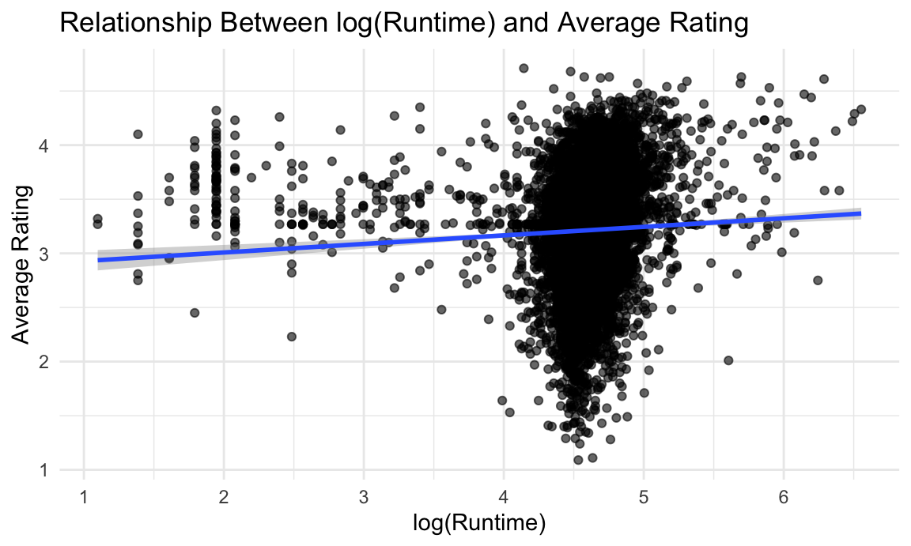
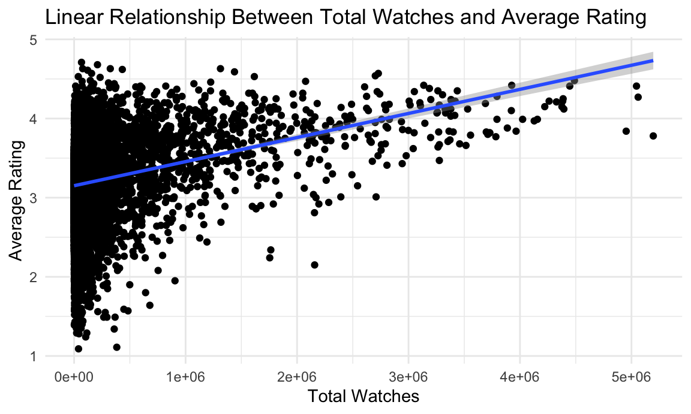

Regression Analysis
library(tidyverse)
library(mgcv)
library(modelr)
library(glmnet)
library(plotly)
knitr::opts_chunk$set(
fig.width = 6,
fig.asp = .6,
out.width = "90%"
)
theme_set(theme_minimal() + theme(legend.position = "bottom"))
options(
ggplot2.continuous.colour = "viridis",
ggplot2.continuous.fill = "viridis"
)
scale_colour_discrete = scale_colour_viridis_d
scale_fill_discrete = scale_fill_viridis_d
set.seed(1)
movie_df = read.csv("data/letterbox_movie_classification_dataset.csv") |>
janitor::clean_names() |>
filter(original_language == "English") |>
select(film_title, director, average_rating, genres, runtime, original_language, description, studios, watches, list_appearances, likes, fans, lowest, medium, highest, total_ratings)Besides building a model with predictors that would give us the
optimal model, we also wanted to look at the association of
average_rating with the model’s individual predictors
runtime, list_appearances,
watches, and fans through simple linear
regression models as well as runtime as the main effect,
adjusting for covariates. We then compared these variables to one
another to determine the best predictors for a movie’s rating.
Linear Models
Runtime vs. Average Rating
# Scatterplot
movie_df |>
ggplot(aes(runtime, average_rating)) +
geom_point(alpha = 0.6) +
geom_smooth(method = "lm", se = TRUE) +
labs(
title = "Linear Relationship Between Runtime and Average Rating",
x = "Runtime (minutes)",
y = "Average Rating"
)
runtime_model = lm(average_rating ~ runtime, data = movie_df)
#Hypothesis Test
runtime_model |>
broom::tidy() |>
select(term, estimate, p.value) |>
mutate(p.value = formatC(p.value, format = "e", digits = 3)) |>
knitr::kable()| term | estimate | p.value |
|---|---|---|
| (Intercept) | 2.9451732 | 0.000e+00 |
| runtime | 0.0025827 | 1.041e-59 |
Model: average_rating = β0 +
β1(runtime)
The coefficient for runtime is 0.00258,
which represents the estimated increase in rating for each unit increase
in the number mintues of the movie.
The model’s p-value is 1.04e-59, which indicates that runtime is a significant predictor of average rating.
Though, based on the numbers a linear model makes sense, when looking
at the graphs there does not seem to be an apparent linear relationship.
Therefore, further analysis was done in order to see if there is a
better model for the association between runtime and
average_rating.
Runtime vs. Average Rating, adjusted for covariates
runtime_adj_model = lm(
average_rating ~ runtime + watches + list_appearances + fans,
data = movie_df
)
runtime_adj_model |>
broom::tidy() |>
select(term, estimate, p.value) |>
mutate(p.value = formatC(p.value, format = "e", digits = 3)) |>
knitr::kable()| term | estimate | p.value |
|---|---|---|
| (Intercept) | 2.9416732 | 0.000e+00 |
| runtime | 0.0015765 | 7.893e-27 |
| watches | -0.0000004 | 4.771e-60 |
| list_appearances | 0.0000068 | 3.781e-168 |
| fans | -0.0000023 | 3.054e-03 |
When the model also incorporates watches,
list_appearances, and fans, the coefficient
became significantly smaller to 1.57e-0.3, and the
p-value decreased to 7.89e-27, which makes it more
significant when combined with the other predictors.
## Log-Transformed Runtime vs Average Rating
# Scatterplot with log(runtime)
movie_df |>
ggplot(aes(x = log(runtime), y = average_rating)) +
geom_point(alpha = 0.6) +
geom_smooth(method = "lm", se = TRUE) +
labs(
title = "Relationship Between log(Runtime) and Average Rating",
x = "log(Runtime)",
y = "Average Rating"
)
# Model with log-transformed runtime
runtime_log_model = lm(average_rating ~ log(runtime), data = movie_df)
runtime_log_model |>
broom::tidy() |>
select(term, estimate, p.value) |>
mutate(p.value = formatC(p.value, format = "e", digits = 3)) |>
knitr::kable()| term | estimate | p.value |
|---|---|---|
| (Intercept) | 2.8499352 | 0.000e+00 |
| log(runtime) | 0.0790047 | 9.371e-09 |
Model: average_rating = β0 +
β1(log(runtime))
When the runtime variable model was put into a log transformation, there is improvement in terms of visuals. However, the resulting p-value 9.37e-09, while still significant, is larger than the p-value in the original linear model.
Dictotomizing Runtime (above and below 100 mins)
movie_df = movie_df |>
mutate(
runtime_cat = if_else(runtime < 100, "Short (<90 min)", "Long (≥90 min)")
)
runtime_interaction_model = lm(
average_rating ~ runtime_cat,
data = movie_df
)
runtime_interaction_model |>
broom::tidy() |>
select(term, estimate, p.value) |>
mutate(p.value = formatC(p.value, format = "e", digits = 3)) |>
knitr::kable()| term | estimate | p.value |
|---|---|---|
| (Intercept) | 3.3252471 | 0.000e+00 |
| runtime_catShort (<90 min) | -0.2230601 | 2.243e-83 |
Dichotomizing the variables to greater and less than 100 mins made
the model more accurate and better to visualize. runtime
generally seems to be a difficult variable to analyze given the amount
of possible outcomes and different run times. However, when included in
the overall model, it works well as a predictor, and the longer the
movie, the higher the rating for movies over 90
minutes. In contrast, the longer the movie, the lower the
rating for movies under 90 minutes. This is a
interesting comparision that could be further investigated in future
analyses.
Appearances in User-Curated Lists vs. Average Rating
movie_df |>
ggplot(aes(list_appearances, average_rating)) +
geom_point() +
geom_smooth(method = "lm", se = TRUE) +
labs(
x = "Appearances",
y = "Average Rating",
title = "Linear Relationship Betweem Appearances on User-Curated Lists
and Average Rating"
)
appearances_model = lm(average_rating ~ list_appearances, data = movie_df)
appearances_model |>
broom::tidy() |>
select(term, estimate, p.value) |>
mutate(p.value = formatC(p.value, format = "e", digits = 3)) |>
knitr::kable()| term | estimate | p.value |
|---|---|---|
| (Intercept) | 3.1126124 | 0.000e+00 |
| list_appearances | 0.0000034 | 3.442e-288 |
Model: average_rating = β0 +
β1(list_appearances)
The coefficient for list_appearances is
3.39-e06, which represents the estimated increase in
rating for each unit increase in appearances in user-curated lists.
The model’s p-value is 3.44e-288, which indicates that the number of times the movie appears in user-curated lists is extremely statistically significant in predicting its average rating.
Total Watches vs. Average Rating
movie_df |>
ggplot(aes(watches, average_rating)) +
geom_point() +
geom_smooth(method = "lm", se = TRUE) +
labs(
x = "Total Watches",
y = "Average Rating",
title = "Linear Relationship Between Total Watches and Average Rating"
)
watches_model = lm(average_rating ~ watches, data = movie_df)
watches_model |>
broom::tidy() |>
select(term, estimate, p.value) |>
mutate(p.value = formatC(p.value, format = "e", digits = 3)) |>
knitr::kable()| term | estimate | p.value |
|---|---|---|
| (Intercept) | 3.1511393 | 0.000e+00 |
| watches | 0.0000003 | 7.415e-154 |
Model: average_rating = β0 +
β1(watches)
The coefficient for watches is
3.04-e07, which represents the estimated increase in
rating for each unit increase in the total number of times the movie
have has watched by users.
The model’s p-value is 7.41e-154, which indicates that the number of times the movie has been watched is extremely statistically significant in predicting its average rating.
Fans vs. Average Rating
movie_df |>
ggplot(aes(log(fans), average_rating)) +
geom_point() +
geom_smooth(method = "lm", se = TRUE) +
labs(
x = "log(Fans",
y = "Average Rating",
title = "Linear Relationship Between Number of log(fans) and Average Rating"
)
fans_model = lm(average_rating ~ fans, data = movie_df)
fans_model |>
broom::tidy() |>
select(term, estimate, p.value) |>
mutate(p.value = formatC(p.value, format = "e", digits = 3)) |>
knitr::kable()| term | estimate | p.value |
|---|---|---|
| (Intercept) | 3.1865530 | 0.000e+00 |
| fans | 0.0000138 | 2.876e-126 |
Model: average_rating = β0 + β1(fans)
Due to fans being extremely skewed and having a wide
value range, we used log scale to reduce extreme outliers and depict any
linear relationships.
The coefficient for fans is 1.38-e05,
which represents the estimated increase in rating of the movie for each
unit increase in the number of users who have marked themselves as a fan
of the film.
The model’s p-value is 2.88e-126, which indicates that the number of fans is is extremely statistically significant in predicting its average rating.
What’s with the extreme numbers?
You might be wondering why the coefficients and p-values are so small. First, consider the nature of our predictors. The number of appearances in user-curated lists, watches, and fans can easily reach the hundreds of thousands. For example, 100,000 more appearances predicts an increase of 0.339 in a film’s ratings.
Similarly, our p-values are so large due to the size of our dataset (n = 8074). Thus, even very small effect sizes can lead to statistically significant p-values. To investigate the actual effect sizes, let’s look at the R² values of each model:
r2_table = tibble(
r2_model = c("Runtime", "Appearances in User-Curated Lists", "Watches", "Fans", "Runtime (adjusted)"),
r2 = c(summary(runtime_model)$r.squared,
summary(appearances_model)$r.squared,
summary(watches_model)$r.squared,
summary(fans_model)$r.squared,
summary(runtime_adj_model)$r.squared
))
knitr::kable(r2_table, digits = 4)| r2_model | r2 |
|---|---|
| Runtime | 0.0324 |
| Appearances in User-Curated Lists | 0.1505 |
| Watches | 0.0829 |
| Fans | 0.0683 |
| Runtime (adjusted) | 0.1906 |
Runtime: This model explains about 3.2% of the variation in movie ratings. The runtime of a film is the weakest predictor for average meeting among the models.
Appearances: This model explains about 15% of the variation in movie ratings, suggesting that more appearances in user-curated lists are predictive of a higher rating.
Watches: This model explains about 8.3% of the variation in movie ratings. While a weaker effect size, this suggests that total watches is modestly predictive of a higher rating.
Fans: This model explains about 6.8% of the variation in movie ratings. The number of fans of a film is a very weak predictor for average rating.
Runtime (adjusted): This model explains about 19.1% of the variation in movie ratings. This is the highest among the models and shows that once adjusting for other variables, runtime becomes more meaningful
Out of these individual variables, appearances in user-curated lists are the most predictive of higher ratings. This may be explained by users being pushed films by an algorithm that are tailored to their past watch history, liked movies, and other collected data. Thus, viewers enjoying a film that aligns with their preferences are more likely to assign it a high rating.
While the adjusted runtime model has the highest R², only 19.1% of average rating variance can be explained. More characteristics seem to influence a movie’s average rating.
Cross-Validation: Average Rating
cv2_df =
crossv_mc(movie_df, 100)
cv2_df = cv2_df %>%
mutate(
appearances_mod = map(.x = train, ~lm(average_rating ~ list_appearances, data = .x)),
watches_mod = map(.x = train, ~lm(average_rating ~ watches, data = .x)),
fans_mod = map(.x = train, ~lm(average_rating ~ fans, data = .x)),
runtime_mod = map(.x = train, ~lm(average_rating ~ runtime, data = .x)),
runtime_adj_mod = map(.x = train, ~lm(
average_rating ~ runtime + watches + list_appearances + fans,
data = .x))
) |>
mutate(
rmse_appearances = map2_dbl(.x = appearances_mod, .y = test, ~rmse(model = .x, data = .y)),
rmse_watches = map2_dbl(.x = watches_mod, .y = test, ~rmse(model = .x, data = .y)),
rmse_fans = map2_dbl(.x = fans_mod, .y = test, ~rmse(model = .x, data = .y)),
rmse_runtime = map2_dbl(.x = runtime_mod, .y = test, ~rmse(model = .x, data = .y)),
rmse_runtime_adj = map2_dbl(.x = runtime_adj_mod, .y = test, ~rmse(model = .x, data = .y))
)
cv2_df |>
select(starts_with("rmse")) |>
pivot_longer(
everything(),
names_to = "model",
values_to = "rmse",
names_prefix = "rmse_") |>
mutate(model = fct_inorder(model)) |>
ggplot(aes(x = model, y = rmse)) + geom_violin() +
labs(
x = "Model",
y = "RMSE",
title = "Root Mean Squared Errors Distributions for Average Rating"
)
cv2_df |>
summarise(
mean_appearances = mean(rmse_appearances),
mean_watch = mean(rmse_watches),
mean_fans = mean(rmse_fans),
mean_runtime = mean(rmse_runtime),
mean_runtime_adj = mean(rmse_runtime_adj)
) |>
knitr::kable()| mean_appearances | mean_watch | mean_fans | mean_runtime | mean_runtime_adj |
|---|---|---|---|---|
| 0.4844235 | 0.503124 | 0.5081235 | 0.516459 | 0.473076 |
Based on the models above, the model with runtime adjusted for covariates, having the lowest RMSE, is the best to predict a movie’s average rating. The second strongest model has appearances as the only predictor. Runtime individually is the weakest predictor.